Pool
Pool Overview#
This page lists all sandbox pools that are accessible in the CyberRangeCZ Platform portal and their available resources. In the following table, each row represents one pool:
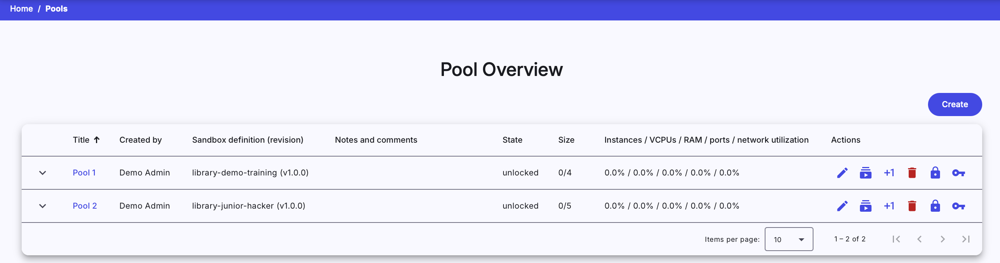
Instructors can click on the title of each pool to see a more detailed view of the given pool. The last column of this table contains actions / that can be executed on the given pool:
Edit
Click the button to edit pool information.
Info
Information like pool size, comment or pool notifications can be edited through pool edit window.
Allocate
Click the button to start allocating sandboxes.
Info
More about allocation in the pool detail section.
Allocate one
Click the button to start allocating one new sandbox.
Info
More about allocation in the pool detail.
Delete
Click the button, and the following confirmation window will be opened:
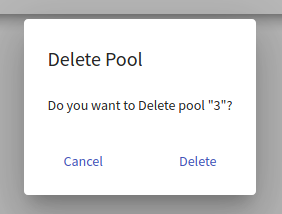
After confirming, the given pool will be deleted from the CyberRangeCZ Platform portal.
Warning
Pools that are locked or not empty cannot be deleted.
Lock
Click the button to change the state of the given pool from unlocked to locked. The lock symbolizes that pool is in use with some training instance.
Unlock
Click the button to change the state of the given pool from locked to unlocked. Unlock symbolizes that pool is not in use with any training instance.
To create a new pool, click on the  button. The instructor will be redirected to the page Create Pool.
button. The instructor will be redirected to the page Create Pool.
Resources Overview panel describes statistics of OpenStack project utilization.
Usage Statistics of Cloud Project#
- Instances: Created VMs in the OpenStack project,
- VCPUs: Virtual CPUs currently in use by all instances,
- RAM: The amount of the main memory currently in use by all instances.
- Ports: The amount of the ports currently in use by all instances.
- Networks: The amount of networks currently in use by all the instances.
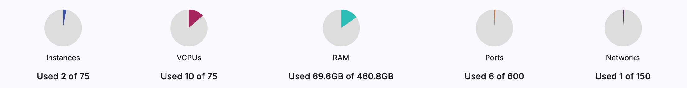
Create Pool#
This page contains a short form that needs to be filled out before creating a new pool. The field Sandbox Pool Size specifies the maximal number of sandboxes that can be created inside the pool. The instructor must also select one of the available sandbox definitions created by the instructor. Sandbox definitions define the topology of sandboxes and user configuration of virtual machines created in a sandbox. Instructor is also able to add a comment to a pool for description purposes. Additionally, the instructor can check the notifications checkbox to receive e-mails on pool build progression. After filling out all the fields, confirm the creation of a new pool by clicking on the button.
The sandboxes built in the pool are always created from the same definition and the same revision. When the pool is created, it is tied to the current revision of the definition. If the definition revision has changed, e.g., new commit has been added to the specific branch, and you want to build sandboxes from a new revision, you need to make a new pool.
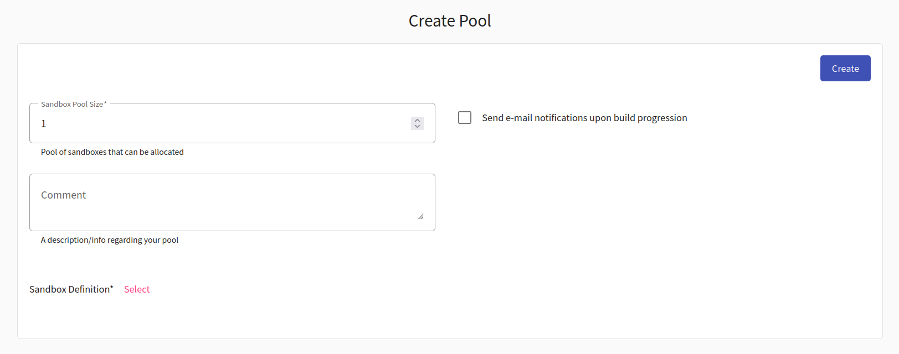
Pool Detail#
When the instructor clicks the title of a given pool in Pool Overview they will be redirected to the Pool Detail page, which contains panel addressing sandbox instances.
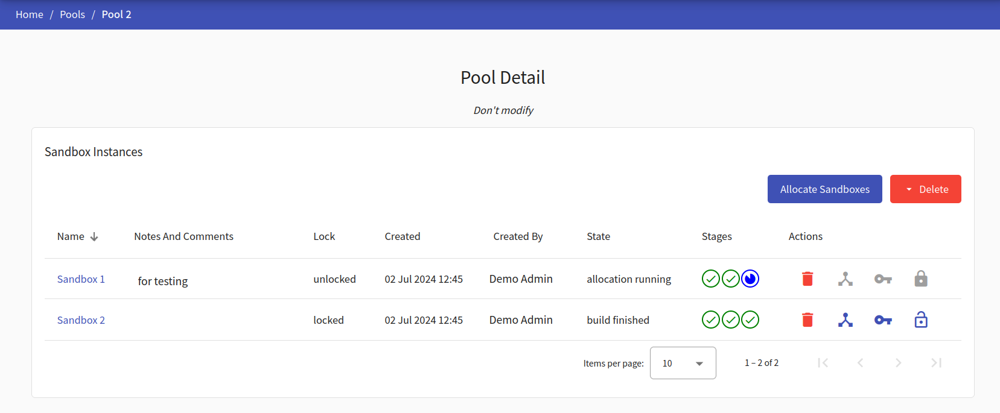
In the top right corner, there are control buttons:
-
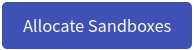 If there is one last unallocated sandbox, it automatically run its allocation. Otherwise, it opens up a dialog window for selecting a specific number of sandboxes in the pool for allocation.
In the following window, you get to specify the amount of sandboxes you wish to allocate.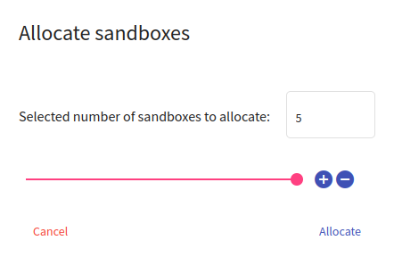
After choosing the desired amount either by typing in the field or setting the value with the slider, confirm your choice by clicking Allocate.
-
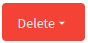 drops down following choices for deleting sandboxes:
- Delete All - force delete all sandbox instances.
- Delete Failed - delete sandboxes with failed stage.
- Delete Unlocked - delete all unlocked sandbox instances.
Sandbox Instances#
The instructor can see all the allocated sandboxes in the Sandbox Instances table. The last column of this table contains actions / that can be executed on the given sandbox:
Delete
Click the button, and the following confirmation window will be opened:
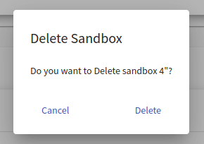
After the confirmation, a new cleanup request for a given sandbox instance will be created.
Info
Only unlocked sandboxes can be deleted.
Display topology
Click the button to redirect to the page with the virtual network topology of the given sandbox.
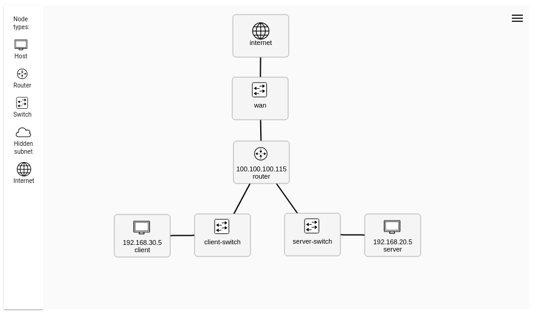
Get SSH Config
Click the button to display a pop-up window to download the ZIP archive. The archive contains configuration with the User SSH access to a respective sandbox. More about SSH access can be found here.
Lock
Click the button to change the state of the sandbox instance from unlocked to locked. Lock symbolizes that the sandbox instance is connected to a training run.
Unlock
Click the button to change the state of the sandbox instance from locked to unlocked. Unlock symbolizes that the sandbox instance can be connected to a training run.
Allocation itself consists of three stages (allocation of a sandbox in the cloud, sandbox networking, sandbox provisioning). Each stage can be in one of the following states:
- In Queue : Stage is waiting to start.
- Running : Stage in progress.
- Finished : Stage was successfully executed.
- Failed : An error occurred during the stage execution.
Retry stage
If one of the stages fails, you can restart the failed stage by clicking on the retry icon which appears next to the stages. Keep in mind that as of now only the second and third stage can be restarted.
Stage details of the sandbox are available by clicking on sandbox name. To see details of stage execution, click the Stage detail button of the given stage. In case that stage fails, the error message should be available there.
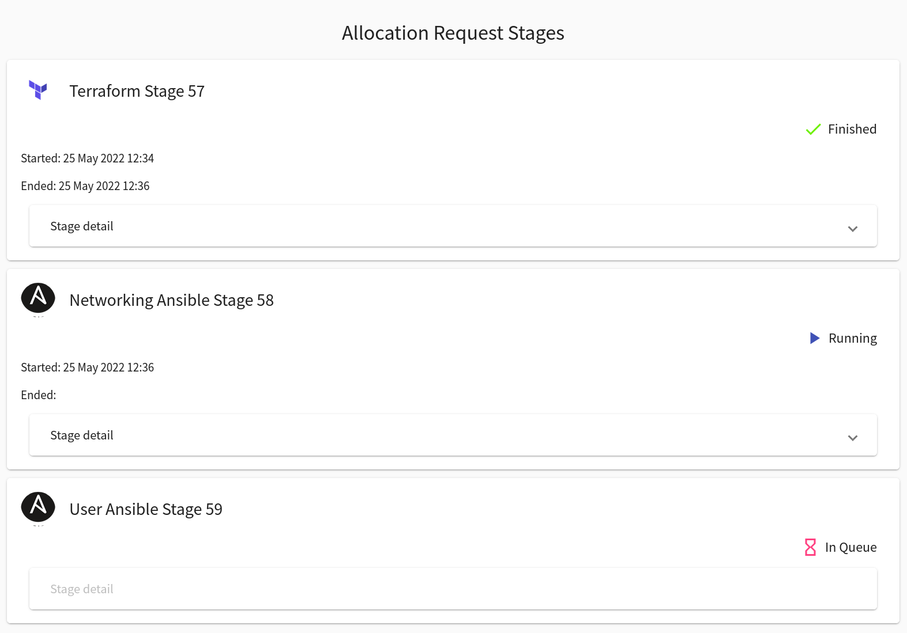